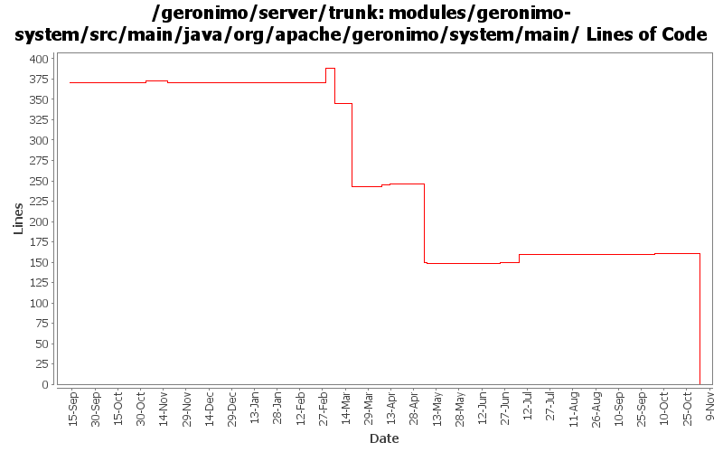

[root]/modules/geronimo-system/src/main/java/org/apache/geronimo/system/main

| Author | Changes | Lines of Code | Lines per Change |
|---|---|---|---|
| Totals | 69 (100.0%) | 409 (100.0%) | 5.9 |
| gdamour | 9 (13.0%) | 295 (72.1%) | 32.7 |
| jdillon | 3 (4.3%) | 41 (10.0%) | 13.6 |
| djencks | 8 (11.6%) | 30 (7.3%) | 3.7 |
| jlaskowski | 3 (4.3%) | 18 (4.4%) | 6.0 |
| dwoods | 5 (7.2%) | 18 (4.4%) | 3.6 |
| gawor | 1 (1.4%) | 5 (1.2%) | 5.0 |
| hogstrom | 1 (1.4%) | 2 (0.5%) | 2.0 |
| rickmcguire | 2 (2.9%) | 0 (0.0%) | 0.0 |
| prasad | 16 (23.2%) | 0 (0.0%) | 0.0 |
| kevan | 21 (30.4%) | 0 (0.0%) | 0.0 |
GERONIMO-3565. Modules distributed amongst framework/modules and plugins
0 lines of code changed in 16 files:
fix possible StringIndexOutOfBoundsException if lots of modules are installed
5 lines of code changed in 1 file:
GERONIMO-3350 get rid of questionable getURLFor method
1 lines of code changed in 1 file:
GERONIMO-2385 server does not update any state when persistent configuration is loaded and ready to serve applications
11 lines of code changed in 3 files:
GERONIMO-3071 use monitor to log configuration startup during server startup, so you can tell what happened.
22 lines of code changed in 2 files:
Modify displayed message for server start time to include better granularity than 1 second
2 lines of code changed in 1 file:
Refactor the various CLIs such that oprtions parsing and arguments are done prior to boot the
boot configuration.
* Add a geronimo-cli JAR containing all the classes to perform options and arguments parsing. It is included in the lib/ folder and added to the Class-Path manifest entry of the deployer.jar, server.jar and client.jar runnable JARs;
* Use commons-cli to perform the option parsing; and
* add support for an extra verbose level, -vvv, and remap the verbose level as follows: -v -> INFO, -vv -> DEBUG, -vvv -> TRACE.
This fixes GERONIMO-3059 - CLIs refactoring - options and arguments parsing should be done prior the boot of a Kernel to provide a quicker feedback to users if they are invalid
61 lines of code changed in 4 files:
GERONIMO-2609 - On linux and maybe other platform, the geronimo.out log file contains invalid characters
None of these messages are getting displayed in the latest 2.0 code, but cleaning up for completeness.
Changed println() to not use "/r", which is the invalid char in the 1.1.1 output.
Switched shutdown word "begun" to "started" to match the "Server shutdown completed" phrasing.
7 lines of code changed in 2 files:
GERONIMO-3071 log the configurations the app client starts using the monitor designed for the purpose
7 lines of code changed in 1 file:
Apply MainBootstrapper boot approach to ClientCommandLine and Daemon to
reduce reliance on lib/ and uniform the way the CLI work.
This fixes GERONIMO-2978 - ClientCommandLine and Daemon improvement to reduce
reliance on lib/.
As part of this change, the RMIClassLoaderSpi implementation has been moved
from geronimo-system to geronimo-kernel as such an implementation must be
in the system class loader and geronimo-system is no longer imported by
the system class loader.
234 lines of code changed in 5 files:
Tidy up a few minor bits
Drop unused privates
7 lines of code changed in 1 file:
Remove mx4j more mx4j
1 lines of code changed in 1 file:
(GERONIMO-2741) Clean up logging output on console
33 lines of code changed in 1 file:
GERONIMO-2641 Add license headers to files. Thanks Jarek!
0 lines of code changed in 8 files:
GERONIMO-2537 Update the src headers in server/trunk/modules to be compliant with the new ASF src header and copyright policy (http://www.apache.org/legal/src-headers.html). I also did some cleanup of the src headers and tried to make them all a consistent format
0 lines of code changed in 13 files:
Partial fix for GERONIMO-2537 All Geronimo source files must be brought in line with the new ASF source header and copyright notice policy
The modules directory is supposed to be migrated. There're some issues with some files, but they'll be handled manually
18 lines of code changed in 3 files:
GERONIMO-2440 Geronimo java.endorsed.dirs support is non-functional
0 lines of code changed in 2 files:
GERONIMO-2405 fix the app client container for running swing app clients by using a shutdown hook
0 lines of code changed in 4 files: